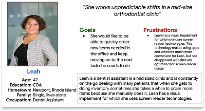
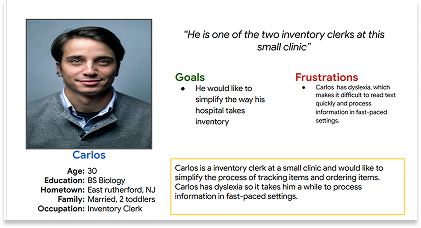
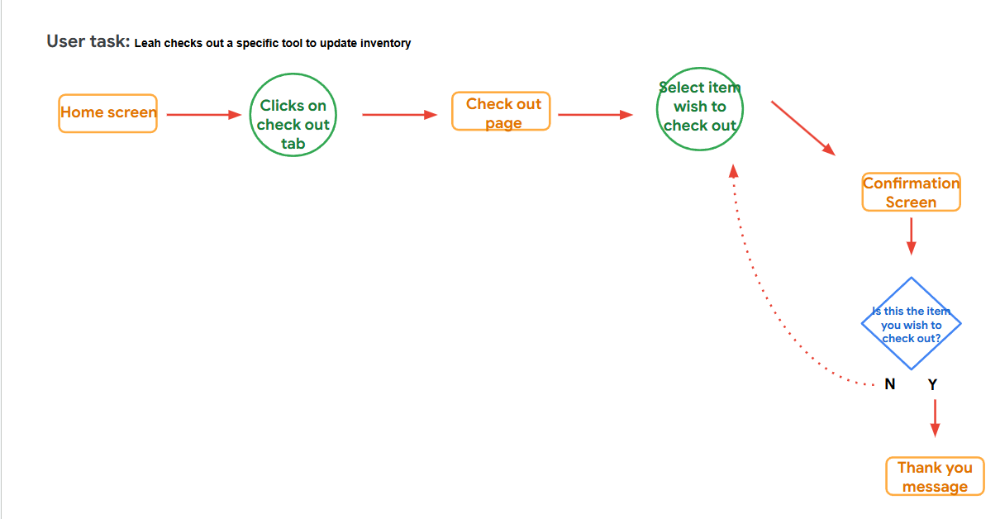
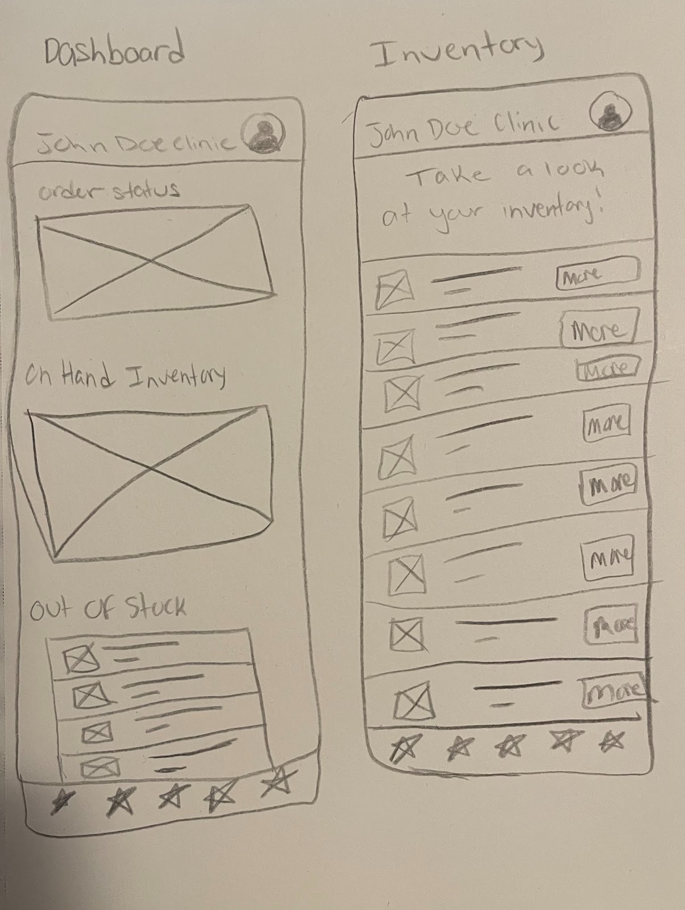
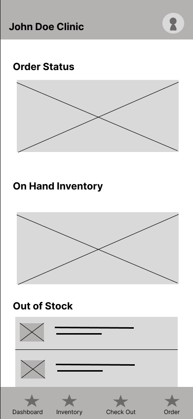
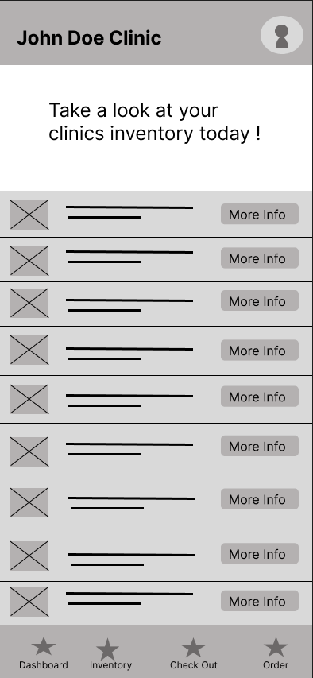
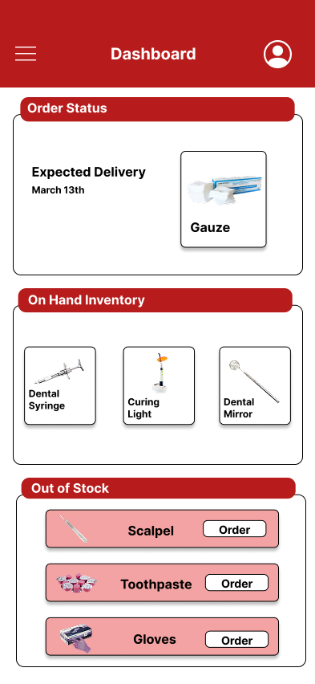
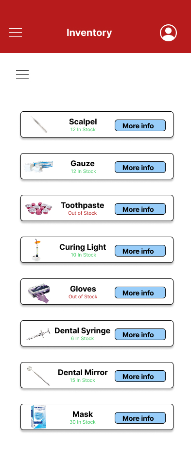

A mid-shift discovery that a critical supply has run out shouldn't cost a nurse ten minutes of scrambling — or cost a patient their care. Clinisync is a mobile inventory app designed to keep clinic staff informed and in control, so they can stay where they're needed most: with their patients.
Before designing a single screen, I needed to understand what it actually felt like to manage inventory in a busy clinic. Not from a systems perspective — from a human one. What was it like to be the nurse who opens the supply cabinet and finds it empty? The MA who has to interrupt patient care to track down gauze?
Through secondary research — online forums, nursing reports, and firsthand accounts from clinical staff — a clear picture emerged. These weren't edge cases or occasional frustrations. They were daily realities.
The consequences were bigger than a missing box of gloves. Stock-outs disrupted clinical workflows, eroded trust in the systems meant to support staff, and — most critically — pulled time and attention away from patients.
To keep the design grounded in real people, I built out personas representing the nurses and medical assistants who would actually use Clinisync day-to-day. These weren't abstract profiles — they were anchors, reminding me throughout the process whose problems I was solving.


With the research findings and personas in hand, I translated what I'd learned into three guiding principles — not feature requirements, but promises the app needed to keep every single time a staff member opened it.
In a fast-paced clinic, no one has time to decode a confusing interface. Every piece of inventory information needed to be scannable at a glance.
Checking stock, logging an update, or flagging a shortage had to happen in seconds — not while a patient waited.
The whole system only works if people trust it. Real-time accuracy wasn't a nice-to-have; it was the foundation everything else was built on.
I started with user flows before touching any visual design. I wanted to trace exactly how a nurse would move through the app — from opening it mid-shift to finding what they need and moving on. Every unnecessary step was a step away from patient care, so every flow had to earn its place.

Early concepts were deliberately rough. Sketches and low-fidelity wireframes let me focus on the structure — how to segment content, where to place the most critical information, and how to make the layout feel clean without sacrificing depth. The goal was to design something that felt effortless, even when the underlying data was complex.



Rather than wait until the design felt "finished," I brought low-fidelity wireframes into user testing early. I wanted to catch friction before it was baked in — to hear from people closest to the problem whether the app actually solved it or just looked like it did. Their feedback shaped the decisions that mattered most.


This project reinforced something I now carry into every design process: the work before the work matters most. Completing user flows, personas, and research before sketching a single screen wasn't just good practice — it was what kept every decision tethered to a real person's real problem.
If I continued Clinisync, I'd push further into automation — AI-driven inventory alerts, predictive reorder suggestions, scheduled ordering that takes one more task off an already full plate. The foundation is there. There's a lot more the app could do for the people who need it.